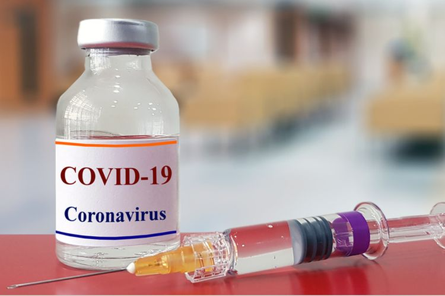

Health
7 Makanan untuk Memperbaiki Fungsi Ginjal
Apakah Penderita Asam Lambung Boleh Makan Pisang?
11 Penyebab Gagal Jantung yang Perlu Diwaspadai
Update
Penulis Vina Fadhrotul Mukaromah | Editor Virdita Rizki Ratriani Terkini.co.id - Negara-negara di dunia berlomba untuk menemukan vaksin dari virus corona. Amerika Serikat mulai melakukan percobaan klinis dan China juga tengah melakukan upaya yang tidak jauh berbeda. Pada Selasa (17/3/2020), pembuat vaksin CanSino Biologics di Tianjin, timur laut China, mengatakan bahwa pihaknya tengah mencari relawan untuk percobaan klinis selama enam bulan dalam pengobatan yang telah dikembangkan bersama Academy of Military Medial Sciences. " Vaksin tidak mengandung zat-zat infeksius, sangat aman, dan stabil, serta hanya membutuhkan satu inokulasi," kata Pusat Pencegahan dan Pengendalian Penyakit Hubei (CDC) sebagaimana dikutip South China Morning Post (SCMP).
Vaksin yang dikembangkan oleh CanSino dan Academy of Military Medical Sciences ini adalah yang terdepan dari 9 vaksin yang tengah dikembangkan oleh China. Semuanya sedang dalam proses penyelesaian studi uji praklinis dan akan memasuki uji klinis pada bulan April. Beberapa diharapkan dapat berkembang dengan cepat daripada vaksin yang lain. "Penelitian dan pengembangan vaksin oleh China akan virus corona secara umum yang paling maju di dunia," kata seorang ahli dan akademisi di Chinese Academy of Sciences, Wang Junzhi.
